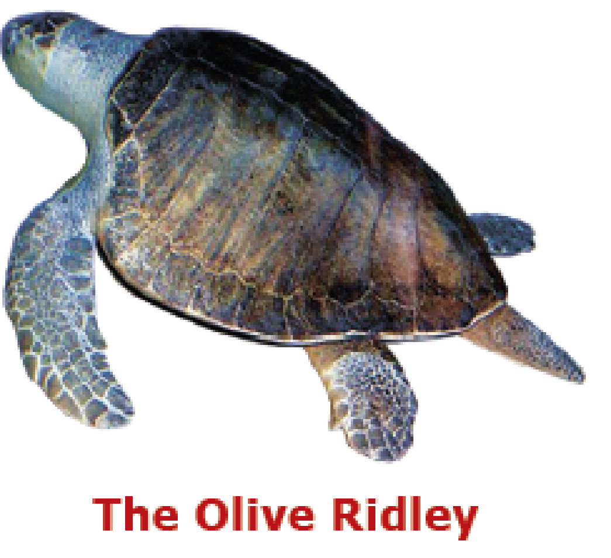

The description of the picture is begins

The most familiar sea turtle Olive Ridley’s picture is shown
The description of the picture is ends
Most of us have seen a tortoise in a zoo or a reptile park. However, not many would have seen its marine relative, the sea turtle. This is not surprising, since these reptiles spend almost their entire life in the sea.
There are seven species of marine or sea turtles in the world. Of them, five are found in India's coastal waters: The Olive Ridley, the Hawksbill, the Green Sea Turtle, the Loggerhead and the Leatherback. Compared to most tortoises, sea turtles are huge. Even the smallest species, the Olive Ridley, weighs up to 35 kilograms when fully grown. The largest of them all, the Leatherback, grows to a length of 2.2meter and each could weigh as much as 700 kilograms!
Sea turtles live their life entirely in the oceans. But they still have a connection with land – they must come ashore to lay eggs. Today, four of the sea turtle species mentioned above have become extremely rare in India. The Olive Ridleys, however, are still commonly seen nesting on sandy beaches all along our coasts.
1. Turtles are different from tortoise ,dash,
2. Turtles are sea animals. ,dash,
3. There are seven kinds of sea turtles in the world. ,dash,
4. Sea turtles are very small. ,dash,
5. Turtles come ashore to lay eggs. ,dash,
6. Sea turtles come to rest on land. ,dash,
7. Olive Ridleys are the only sea turtles seen on Indian shores. ,dash,
marine – found in the sea
species - group of animals with common features
coastal - land by the edge of a sea